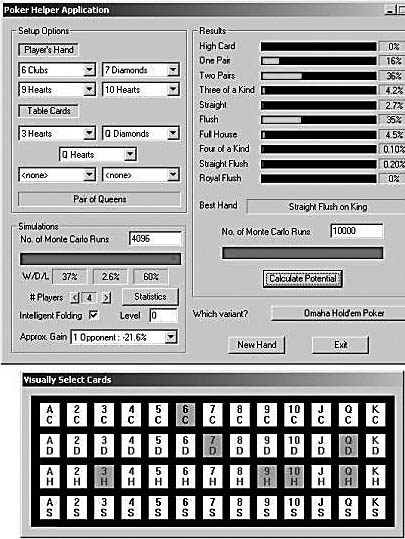

{% include JB/setup %}
{% raw %}
<div>
<a name="toppage" class="pcalibre calibre1"></a><table width="100%" border="0" cellspacing="0" cellpadding="0" class="sfbody"><tr valign="top" class="calibre2"><td class="calibre3"><a name="MainContent" class="pcalibre calibre1"></a><table width="95%" class="sfbody"><tr class="calibre2"><td class="pcalibre1 v"><!--Copyright (c) 2002 Safari Tech Books Online--><table width="100%" border="0" cellspacing="0" cellpadding="2" class="calibre4"><tr class="calibre2"><td valign="middle" class="v1 pcalibre1" height="5"></td></tr><tr class="calibre2"><td valign="middle" class="v1 pcalibre1"><table cellpadding="0" cellspacing="0" border="0" width="100%" class="calibre4"><tr class="calibre2"><td class="calibre6"><span class="calibre7"> </span>
                   
                  <span class="calibre7">   </span>
             <span class="calibre7"> </span></td></tr></table></td><td class="calibre8"/><td valign="middle" class="v2 pcalibre1"><a href="10061538.html" class="pcalibre calibre1"></a> 
           
          <span class="calibre7"><a target="_self" href="ch02lev1sec4.html" title="Previous section" class="pcalibre calibre1"></a></span>
				
				 
				
				<span class="calibre7"><a target="_self" href="ch02lev1sec6.html" title="Next section" class="pcalibre calibre1"></a></span></td></tr></table><div id="section" class="calibre15"><table width="100%" border="0" cellspacing="0" cellpadding="0" class="calibre4"><tr class="calibre2"><td valign="top" class="calibre8">Security Game Programming Networking Programming Greg Hoglund Gary McGraw Addison Wesley Professional Exploiting Online Games: Cheating Massively Distributed Systems<a name="ch02lev1sec5" class="pcalibre calibre1"></a>
<h3 id="title-IDAA0D4K" class="docSection1Title">Lurking (Data Siphoning)</h3>
<p class="docText">Much valuable gaming data can be gleaned simply by watching other players play the game and learning how they behave. This is true for sports, of course, where watching your opponents play in order to understand their <a name="iddle1099" class="pcalibre calibre1"></a><a name="iddle1279" class="pcalibre calibre1"></a><a name="iddle1284" class="pcalibre calibre1"></a><a name="iddle1327" class="pcalibre calibre1"></a><a name="iddle1688" class="pcalibre calibre1"></a><a name="iddle1874" class="pcalibre calibre1"></a><a name="iddle2107" class="pcalibre calibre1"></a><a name="iddle2115" class="pcalibre calibre1"></a><a name="iddle2143" class="pcalibre calibre1"></a>play is an invaluable aid. The same kind of technique works for online gaming, from actions in an MMORPG to hands in online poker.</p>
<a name="ch02lev2sec10" class="pcalibre calibre1"></a>
<h4 id="title-IDAX2D4K" class="docSection2Title">Online Statistics</h4>
<p class="docText">Services like Thottbot help users collect and use statistics about the game.<sup class="docFootnote"><a class="pcalibre6 pcalibre5 calibre1" href="#ch02fn15">[15]</a></sup> For example, Thottbot can tell you exactly where to find the vorpal sword of heinosity, provide you with a map to it, and let you know what your chances are of obtaining it once you're there. Thottbot works by sucking up as much information as it can from cooperating gamers and then republishing that information after it has been properly organized. For more on Thottbot, see <a class="pcalibre6 pcalibre5 calibre1" href="ch03.html#ch03">Chapter 3</a>.</p><blockquote class="calibre24"><p class="docFootnote1"><sup class="calibre31"><a name="ch02fn15" class="pcalibre calibre1">[15]</a></sup> See the Blizzard TOU document at &lt;<a class="pcalibre6 pcalibre5 calibre1" target="_blank" href="http://www.battle.net/tou.shtml">http://www.battle.net/tou.shtml</a>&gt;.</p></blockquote>
<a name="ch02lev2sec11" class="pcalibre calibre1"></a>
<h4 id="title-IDAV3D4K" class="docSection2Title">Poker Statistics</h4>
<p class="docText">Online poker is just as big as if not bigger than MMORPGs, though the recently passed legislation in the United States will put a big crimp in the market.</p>
<p class="docText">A number of third-party vendors create and sell software packages to help analyze hand history data and build a database of information about players and their tendencies. Serious poker players use these statistics to check for weaknesses in their play and uncover weaknesses in the play of others. Using these tools is extremely common, and all serious players (including an entire class of professional online poker players) use them.</p>
<p class="docText">As usual, academics and mathematicians have entered the fray. One interesting paper titled "Mathematical Statistics and Online Poker" by Jason Swanson can be found at &lt;<a class="pcalibre6 pcalibre5 calibre1" target="_blank" href="http://www.math.wisc.edu/~swanson/instructional/stats_poker.pdf">http://www.math.wisc.edu/~swanson/instructional/stats_poker.pdf</a>&gt;. Be forewarned, though—this paper includes real math!</p>
<p class="docText"><a class="pcalibre6 pcalibre5 calibre1" href="#ch02fig04">Figure 2-4</a> shows the GUI from a typical online poker third-party application. This application helps a player understand poker statistics and what to do next. It generates statistics, win percentages, hand probabilities, and useful tactical information for the game of Texas Hold 'em Poker.</p>
<a name="ch02fig04" class="pcalibre calibre1"></a><p class="calibre28"><center class="calibre29">
<h5 class="docFigureTitle">Figure 2-4. An online poker helper application. (From &lt;<a class="pcalibre6 pcalibre5 calibre1" target="_blank" href="http://www.frayn.net">http://www.frayn.net</a>&gt;; reproduced with permission.)</h5>
</center></p><p class="docText">
</p>
<br class="calibre15"/>
<p class="docText"><a name="iddle1052" class="pcalibre calibre1"></a><a name="iddle1262" class="pcalibre calibre1"></a>In any game that involves money, it should be clear that your adversary will tool up. Online poker cheats and stats trackers are destined to become much better over time. Perhaps one day the bots will be good enough to beat even the best humans consistently.</p>
<a name="ch02lev2sec12" class="pcalibre calibre1"></a>
<h4 id="title-IDAHAE4K" class="docSection2Title">Auction Manipulation</h4>
<p class="docText">Cheaters also like to cheat in auctions. Though only tangential to online gaming, online auctions share many of the same "instant riches" lure that online games do. Considering some of the tactics that cheaters in online auctions resort to may provide some insight on cheaters in general.</p>
<p class="docText"><a name="iddle1299" class="pcalibre calibre1"></a><a name="iddle1669" class="pcalibre calibre1"></a><a name="iddle1817" class="pcalibre calibre1"></a><a name="iddle2061" class="pcalibre calibre1"></a>Probably the most obvious tactic in auction manipulation is shill bidding. The idea behind shill bidding is to place a bid on an item only to inflate the final value. Of course, it's also against the law and a felony in the United States (you see, shill bidding existed long before online auctions). Auction houses like eBay track IP numbers to try to defeat shill bidding. They also monitor bidding activity over time to look for suspicious patterns. Sound familiar?</p>
<p class="docText">Another common cheating technique in online auctions is interfering in a transaction through out-of-band communication. This can take place through e-mail or any other channel. Colluding in an auction can be just as unfair as colluding in a poker game, and just as hard to detect.</p>
<p class="docText">A third form of cheating involves interposing near the end of an auction to try to intercept payment. By simply dashing off a quick e-mail to the winner as if the attacker were the seller and asking for payment, the attacker can sometimes dupe the poor winner into paying the wrong person. Traceable payment systems help make this attack less prevalent than others.<sup class="docFootnote"><a class="pcalibre6 pcalibre5 calibre1" href="#ch02fn16">[16]</a></sup></p><blockquote class="calibre24"><p class="docFootnote1"><sup class="calibre31"><a name="ch02fn16" class="pcalibre calibre1">[16]</a></sup> For more on online auction cheating, see &lt;<a class="pcalibre6 pcalibre5 calibre1" target="_blank" href="http://www.dummies.com/WileyCDA/DummiesArticle/id-2679.html">http://www.dummies.com/WileyCDA/DummiesArticle/id-2679.html</a>&gt;.</p></blockquote>
<p class="docText">Finally, there's a way to cheat in head-to-head auctions, applicable when things begin to heat up at the end. The competing parties (A and B) may be bidding against each other for the last few minutes, when A carries out an attack to deny service to B. One simple technique involves A attempting to log in as B unsuccessfully several times in a row so that B is temporarily locked out of the account.</p>
<ul class="calibre18"></ul></td></tr></table><table width="100%" border="0" cellspacing="0" cellpadding="2" class="calibre4"><tr class="calibre2"><td valign="middle" class="v1 pcalibre1" height="5"></td></tr><tr class="calibre2"><td valign="middle" class="v1 pcalibre1"><table cellpadding="0" cellspacing="0" border="0" width="100%" class="calibre4"><tr class="calibre2"><td class="calibre6"><span class="calibre7"> </span>
                   
                  <span class="calibre7">   </span>
             <span class="calibre7"> </span></td></tr></table></td><td class="calibre8"/><td valign="middle" class="v2 pcalibre1"><a href="10061538.html" class="pcalibre calibre1"></a> 
           
          <span class="calibre7"><a target="_self" href="ch02lev1sec4.html" title="Previous section" class="pcalibre calibre1"></a></span>
				
				 
				
				<span class="calibre7"><a target="_self" href="ch02lev1sec6.html" title="Next section" class="pcalibre calibre1"></a></span></td></tr></table><table width="100%" border="0" cellspacing="0" cellpadding="2" class="calibre4"><tr class="calibre2"><td valign="top" class="calibre14"><span class="calibre7"></span></td></tr></table></div><!--IP User 2--></td></tr></table></td><td class="calibre3">
                         
                      </td></tr><tr class="calibre2"><td colspan="3" valign="bottom" class="calibre3"><br class="calibre15"/><p class="v5 pcalibre1"></p><br class="calibre15"/></td></tr></table></div>

{% endraw %}

